模块级 LVS/DRC/Antenna 物理验证
TLDR（太长不看）
- 验证脚本：
pv/Makefile。 - 查看 LVS 验证结果：
make lvs后查看pv/reports/lvs.summary。 - 查看 DRC 验证结果：
make drc后查看pv/reports/drc.summary。 - 查看天线验证结果：
make ant后查看pv/reports/antenna.summary。 - 一键运行所有验证：
make all。
1. 模板文件
在 Cadence Innovus 中完成数字子系统的物理设计或者顶层系统的物理设计之后，需要在 Siemens Calibre 中进行 LVS 和 DRC 物理验证。
什么是 LVS 与 DRC 物理验证
LVS（Layout Versus Schematic）物理验证用于确保集成电路的版图（Layout）与其原理图（Schematic）一致。LVS 检查的内容包括：电路网络一致性、器件匹配。 在逻辑综合、物理实现的流程正确的情况下，数字子系统的 LVS 的准确性基本是由 EDA 工具保障的；而手动绘制的版图正确性则有更大概率出现人为的错误。
DRC（Design Rule Check）用于确保集成电路的版图符合代工厂（例如 TSMC、SMIC）制造工艺的设计规则。DRC 检查内容包括：最小间距、最小宽度、重叠与对准等。 在 Innovus 物理设计过程中，有可能因为布局布线的密度过高，导致走线距离小于最小距离，从而导致 DRC 错误。
验证所使用的文件夹结构为：
$ROOT
├── pv
│ ├── Makefile
│ ├── runset # Configuration of the verification tools (i.e., Calibre)
│ │ ├── antenna.runset
│ │ ├── drc.runset
│ │ └── lvs.runset
│ ├── workspace # Main folder for storing Virtuoso-generated files
│ │ ├── .cdsinit # Initialization file for Calibre verfication tools
│ │ ├── cds.lib # Index file storing the technology library paths
│ │ ├── drc # DRC reports generated by Virtuoso
│ │ │ └── ...
│ │ ├── lvs # LVS reports generated by Virtuoso
│ │ │ └── ...
│ │ └── ...
├── pnr # Main folder for Innovus physical implementation
│ ├── Makefile
│ ├── logs # Log files generated by Innovus
│ │ └── ...
│ ├── scripts # PnR scripts for Innovus
│ │ └── ...
│ └── <top_module_name> # Files generated by Innovus during physical implementation
│ ├── backup
│ │ └── ...
│ ├── reports
│ │ └── ...
│ ├── <top_module_name>.gds.gz # Top module layout
│ ├── <top_module_name>.cdl.gz # Top module circuit description netlist
│ ├── <top_module_name>.lef # Top module physical layout
│ ├── <top_module_name>_flat_postpnr.v.gz # Flattened netlist w/ P/G pins
│ ├── <top_module_name>_hier_postpnr.v.gz # Hierarchical netlist w/o P/G pins for post-implementation simulation
│ ├── <top_module_name>_tt_0p88v_25c.lib # Top module timing library
│ └── <top_module_name>_tt_0p88v_25c.sdf.gz # Top module standard delay format
└── ...
2. 使用脚本进行 LVS/DRC/Antenna 物理验证
2.1 LVS
在 $ROOT/pv 路径下运行以下命令：
LVS 会在 pv/reports/lvs.summary 生成 LVS 报告文件。
看到如下内容则表示 LVS 物理验证通过：
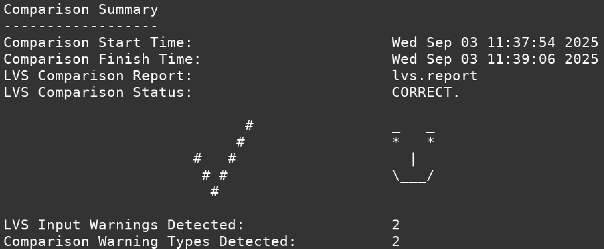
如果 LVS 没有通过，证明在后端物理实现的时候某些步骤出现了问题，需要根据 LVS 报告中的错误信息进行排查和修正。
2.2 DRC
在 $ROOT/pv 路径下运行以下命令：
DRC 会在 pv/reports/drc.summary 生成 DRC 报告文件。
看到如下内容则表示 DRC 物理验证通过：
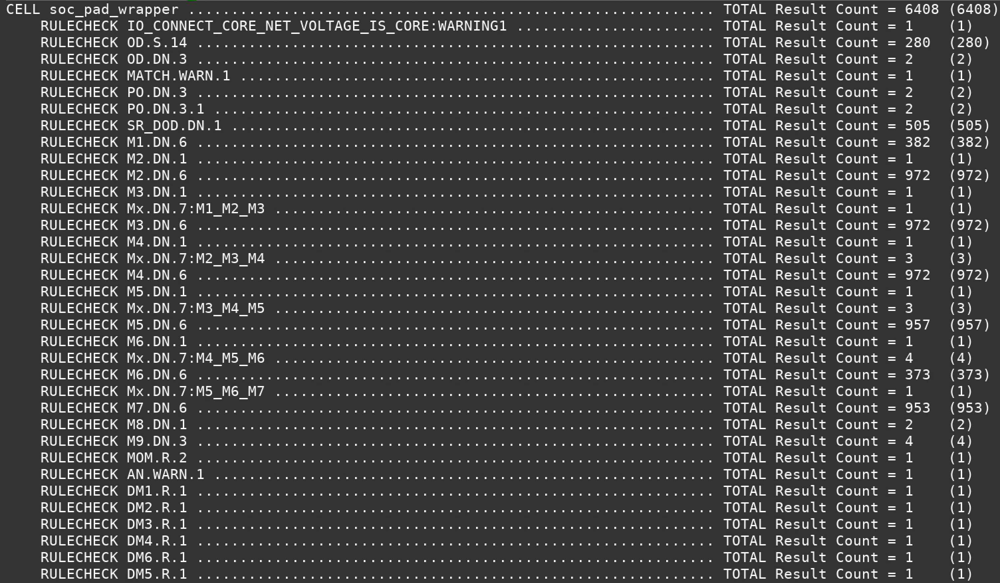
可忽略的 DRC
Block-level DRC 物理验证中，如下 DRC 是可忽略的：
- IO_CONNECT_CORE_NET_VOLTAGE_ID_CORE:WARNING1
- AN.WARN.1
- MATCH.WARN.1
- MOM.R.2
- OD.S.14
- *.DN.*
- DM*.R.1
2.3 天线效应
在 $ROOT/pv 路径下运行以下命令：
天线效应会在 pv/reports/antenna.summary 生成天线效应报告文件。
看到如下内容则表示天线效应物理验证通过：
天线效应与 DRC
狭义上的 DRC 指的是普通的设计规则检查，而天线效应是特殊的设计规则检查。 在此文档中所提及的 DRC 都指的是狭义上的 DRC，即不包括天线效应的规则检查。
2.4 一键运行所有验证
在 $ROOT/pv 路径下运行以下命令：
3. 使用 GUI 进行 LVS/DRC/Antenna 物理验证
3.1 LVS
在 $ROOT/pv 路径下运行以下命令：
会弹出如下窗口，点击 Run LVS 即可开始 LVS 物理验证。
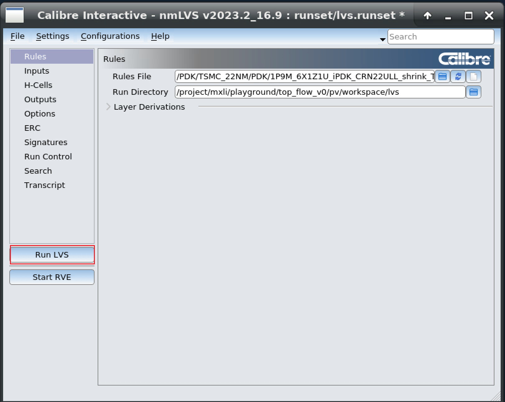
运行结束后会弹出如下窗口。
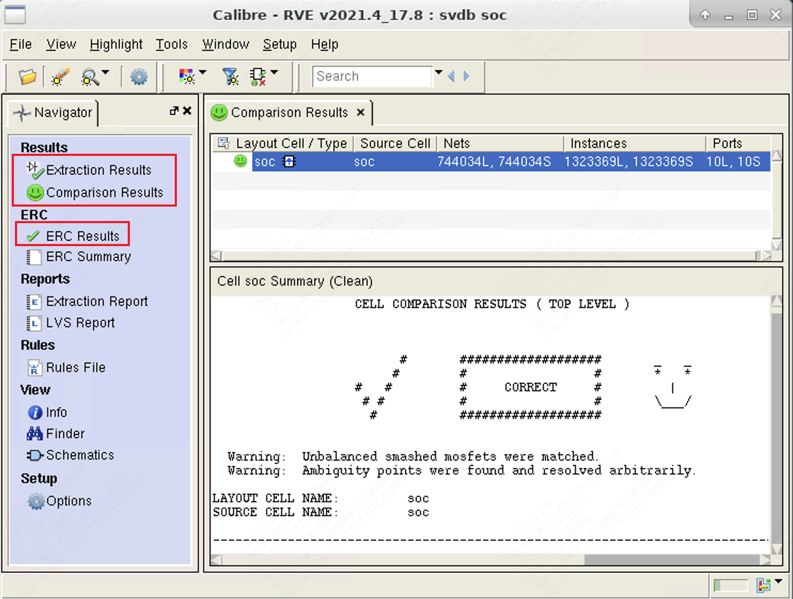
看到笑脸则表示 LVS 物理验证通过。
3.2 DRC
在 $ROOT/pv 路径下运行以下命令：
会弹出如下窗口，点击 Run DRC 即可开始 DRC 物理验证。
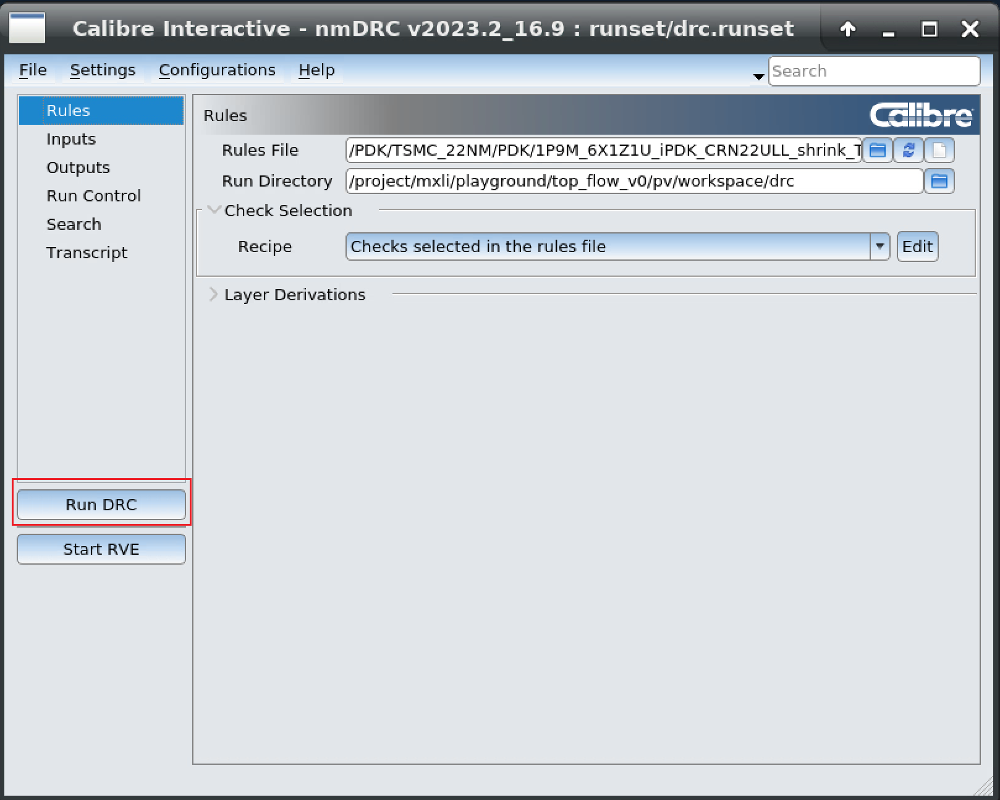
运行结束后会弹出如下窗口。
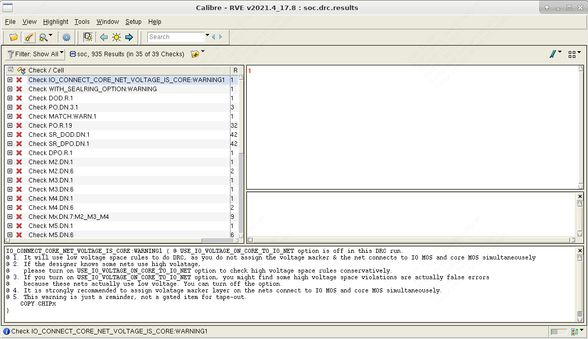
图中所示的 DRC 错误都是可忽略的。
可忽略的 DRC
Block-level DRC 物理验证中，如下 DRC 是可忽略的：
- IO_CONNECT_CORE_NET_VOLTAGE_ID_CORE:WARNING1
- AN.WARN.1
- MATCH.WARN.1
- MOM.R.2
- OD.S.14
- *.DN.*
- DM*.R.1
3.3 天线效应
在 $ROOT/pv 路径下运行以下命令：
会弹出和 DRC 验证一致窗口，点击 Run DRC 即可开始天线效应物理验证。
运行结束后会弹出如下窗口。
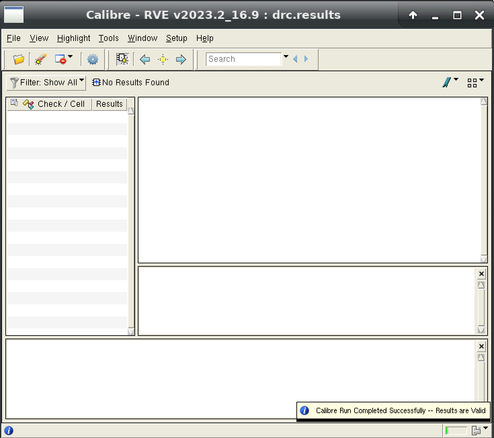
没有任何错误则表示天线效应物理验证通过。
天线效应与 DRC
狭义上的 DRC 指的是普通的设计规则检查，而天线效应是特殊的设计规则检查。 在此文档中所提及的 DRC 都指的是狭义上的 DRC，即不包括天线效应的规则检查。
4. 使用 Virtuoso 查看版图并进行 LVS/DRC/Antenna 物理验证
在 $ROOT 路径下，运行如下命令启动 Virtuoso。
4.1 导入设计（初次使用）
若首次打开 Virtuoso，需要将 Innovus 完成的设计导入到 Virtuoso 中。
首先，在 Virtuoso 中新建一个 Library 用于存放我们的设计。在弹出的 Virtuoso Terminal 中选择 File -> New -> Library，如下所示。
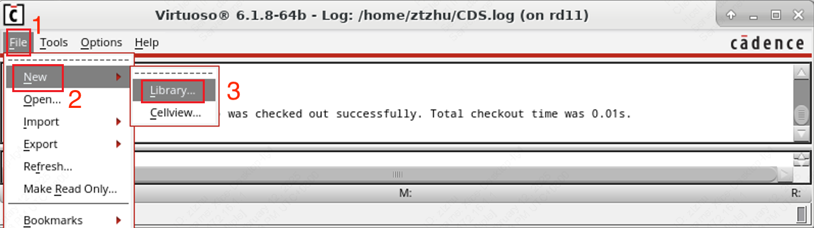
随后，输入该 Library 的名字，并选择 Attach to an existing technology library。对于 TSMC 22nm 的流片，选择 tsmcN22，如下所示。
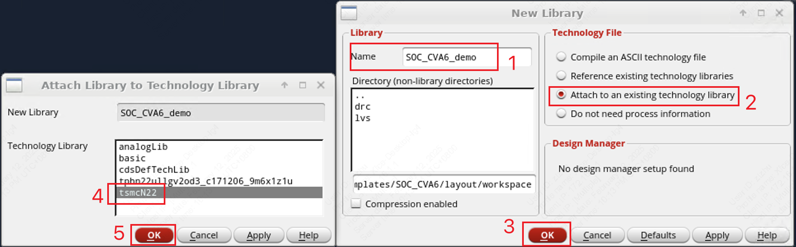
新建一个 Library 之后，回到 Virtuoso Terminal，并选择 File -> Import -> Stream，如下所示。
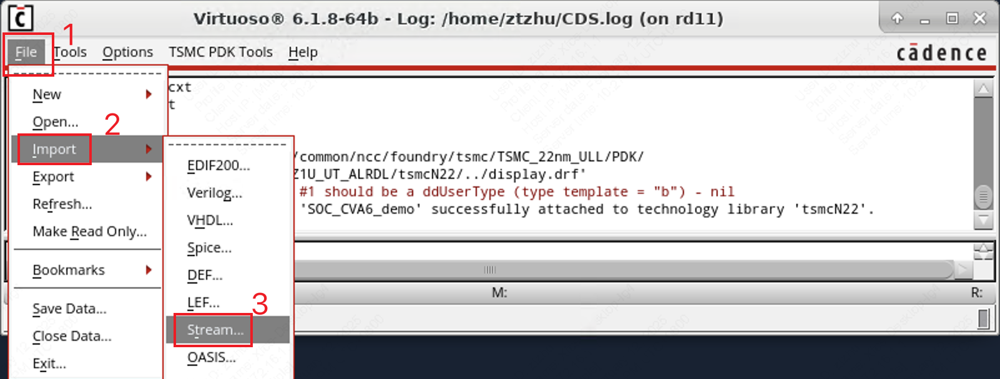
随后，在弹出的 XStream In 窗口中导入我们设计的 <top_module_name>.gds2 文件。文件在 pnr/<top_module_name> 文件夹下生成。之后，选择将设计导入到之前新建的 Library 中，最后点击 Translate。
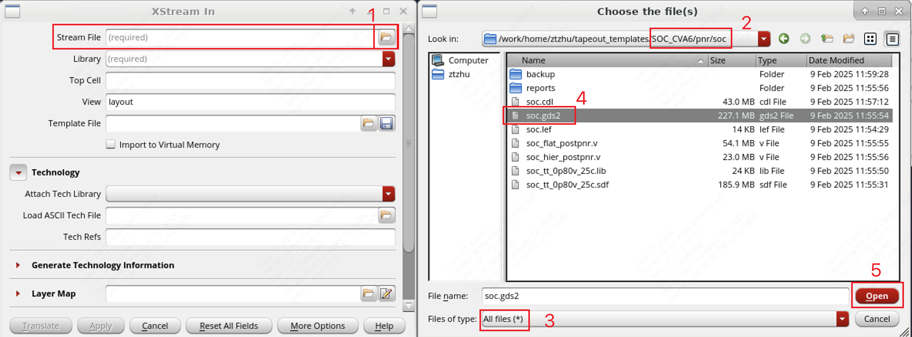
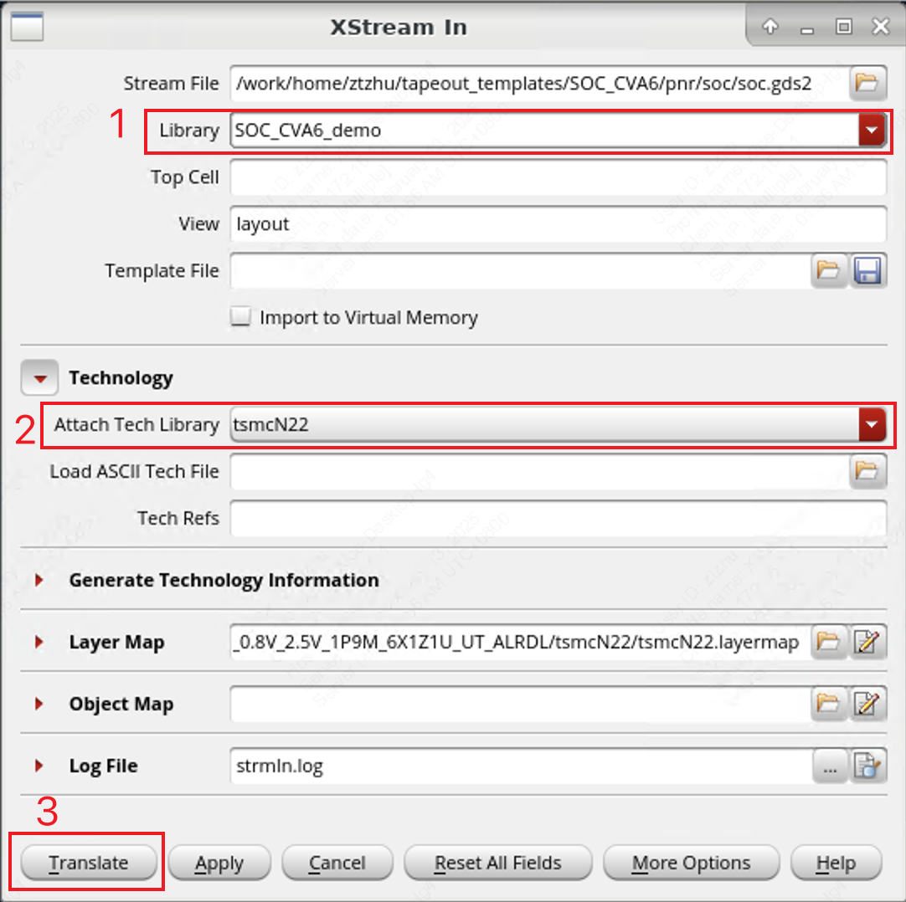
StreamIn 报错
在 Virtuoso 导入设计之后，可能会出现类似下面这样的报错，可以不予理会。
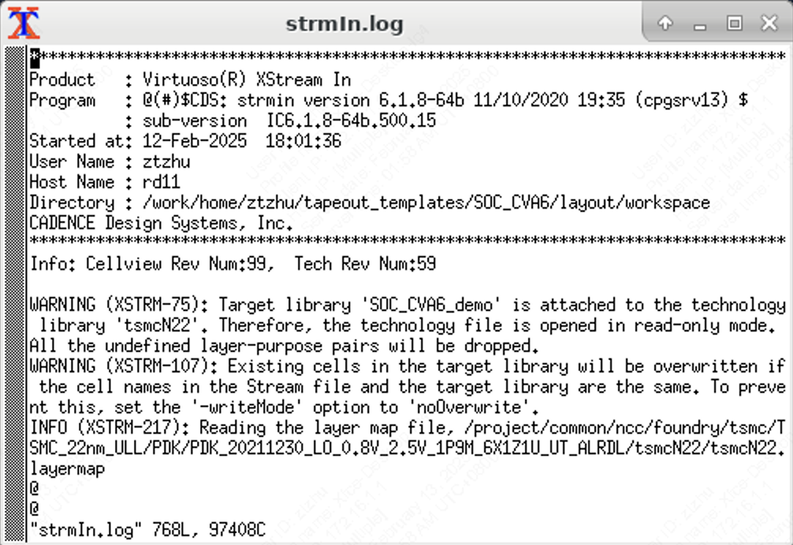
4.2 打开设计
如果之前已经把设计导入到 Virtuoso 中，则可以在 Virtuoso Terminal 中选择 Open 打开设计，具体步骤如下所示。
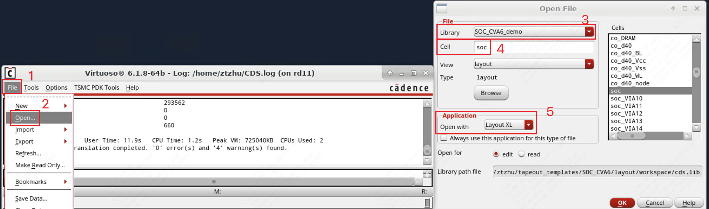
调整 Virtuoso Display Settings
Virtuoso 的熟练使用涉及到很多快捷键和高阶功能，值得单独开辟一个章节详述，但是调整显示设置对于基本使用有还是有必要的。
设置最小格点：在 Virtuoso Layout Suite L 上方菜单栏中选择 Options -> Display，把 X Snap Spacing 和 Y Snap Spacing 改成 0.005
5. LVS 物理验证
5.1 导入 LVS Rule 与 CDL 网表文件
在 Virtuoso Layout Suite L 上方菜单栏中选择 Calibre -> Run nmLVS，如下所示。
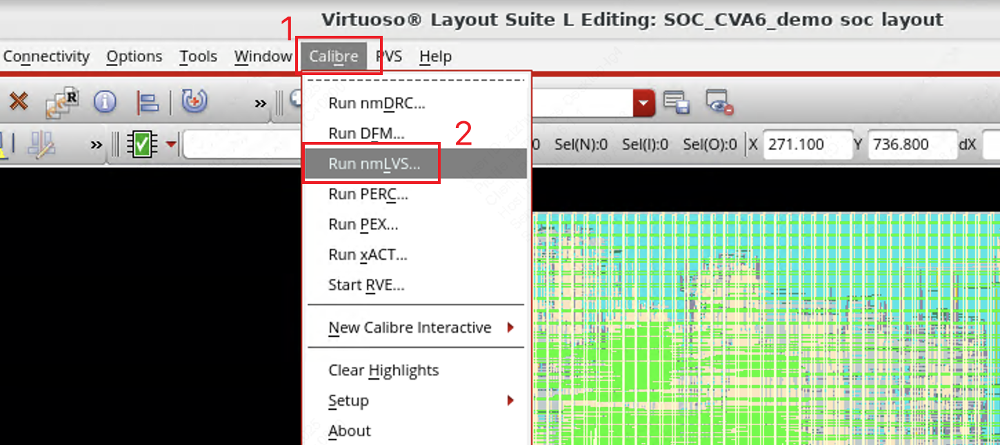
菜单栏中没有 Calibre 选项
如果使用文档提供的模板文件，原则上应该不会出现这个情况。这是因为在启动 Virtuoso 的时候缺少一个初始化文件。
可以将 /project/common/[block|top]_flow_tsmc_n[12|22]/pv/workspace/.cdsinit 复制到自己项目下的 pv/workspace/ 路径下面。
或者也可以将上述 .cdsinit 复制到 /home/<your_name> 目录下，这样在任何位置打开 Virtuoso 都可以使用 Calibre 工具了 :)
随后，按照如下操作步骤导入 LVS Rules，文件位于 /PDK/TSMC_22NM/PDK/1P9M_6X1Z1U_iPDK_CRN22ULL_shrink_T-N22-CR-SP-004-W1_v1.3_1p1a_20211230/Calibre/lvs/calibre.lvs 路径。
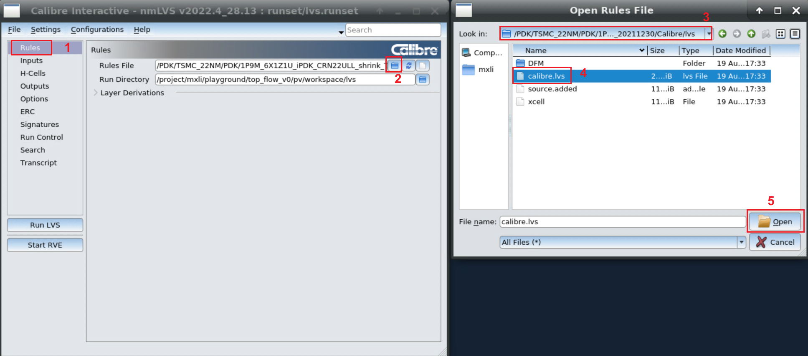
为了保持工作目录规整，我们指定将 LVS 输出文件放在 pv/workspace/lvs 路径下，如下所示。
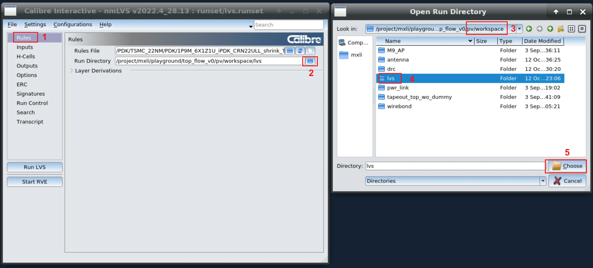
随后，在 Calibre Interactive 窗口中选择 Inputs，并在 Netlist 中导入 Innovus 生成的 CDL 网表文件，步骤如下。
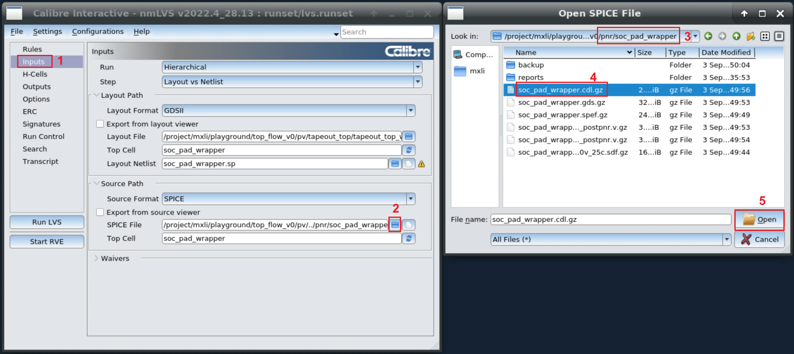
此外，可以在 Inputs 界面选择 Hierarchical（层次化） 或者 Flat（扁平化） 选项。这是两种不同的验证方式，但是原则上来讲，两种验证方法对于 LVS 正确性没有影响。
- 层次化验证保留了设计的层次结构，每个模块在验证过程中都作为一个独立的单元进行检查。层次化验证速度更快，可以减少相同子模块的重复验证计算。
- 扁平化验证将设计的所有模块展开为一个平面结构，即所有模块的内部细节都被展开并作为一个整体进行检查。检查会更加全面，但是速度较慢、内存占用更高。
5.2 设置 LVS 运行选项
导入了 LVS 所需的输入文件之后，在 LVS Options 设置 LVS 物理验证的运行选项，以下对 Supply, Connect, Gates, LVS Box 四个选项进行简要说明。
Calibre Interactive 中没有 LVS Options 选项
在 Calibre Interactive 上方菜单点击 Setup（如下图 1 所示），并勾选 LVS Options，然后就可以看到具体的选项了 :)
- 在
Supply中添加Power nets与Ground nets，与 Innovus 物理实现的设置保持一致。
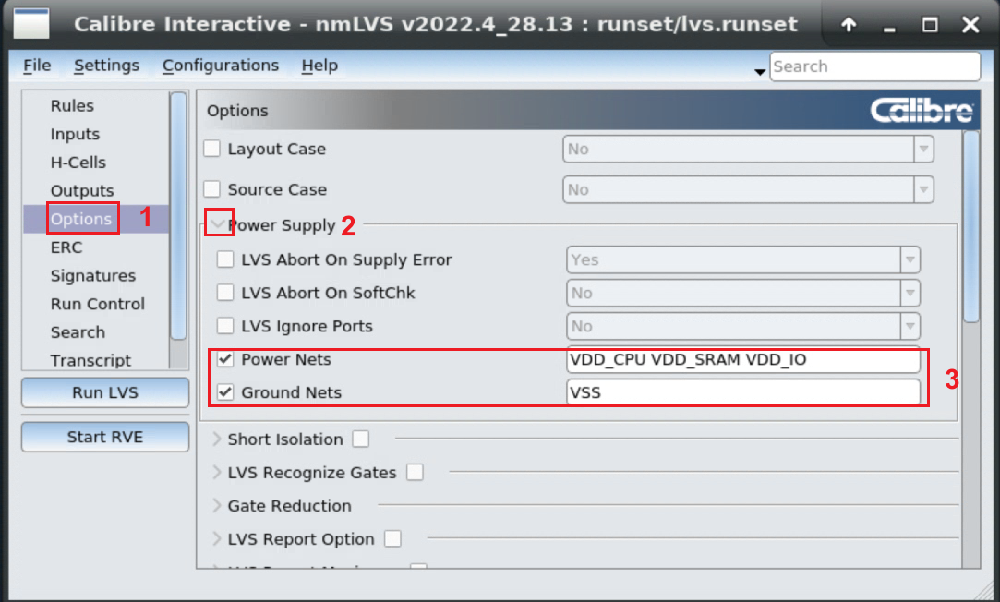
- 在
Connect中勾选Connect nets with colon，以及Don't connect nets by name，如下所示。
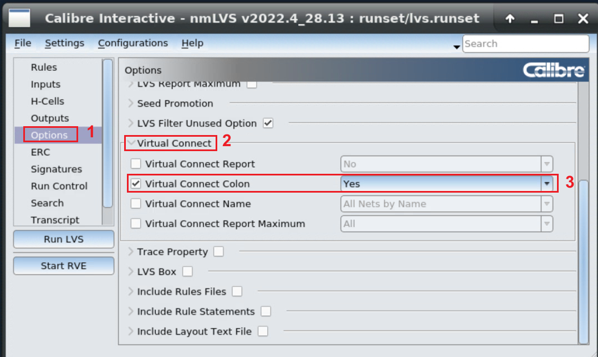
- 在
Filter Unused Device Options中可以设置 LVS 物理验证中用于识别和匹配设计中逻辑门的方法。对于常规的数字流程来说，不需要在这里做特殊的设置。
一种可能的解决 LVS 报错的方式
在此展示一种通过 Filter Unused Device Options 中的设置解决 LVS 报错的例子。对于我们的 CVA6 CPU 进行层次化 LVS 物理验证，并将 SRAM IP 设置 LVS Box，只对逻辑综合出来的标准单元进行物理验证，最终 LVS 报告如下，显示有许多的 Instances 和 Nets 在网标中缺失。
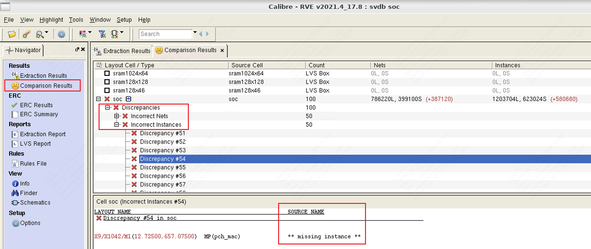
此时我们设置 Filter Unused Device Options，勾选其中的 Q 选项，即 MOS, bipolar, resistor, capacitor, and diode devices with no general paths to any non-power/ground pads，如下图中 3* 所示，此时重新进行 LVS 物理验证，会发现 LVS 验证通过。
出现这个 LVS 报错的原因，是我们此前 Innovus 中进行物理实现时，添加了许多 Physical-only cells，而且在 Finish 阶段生成门级网表时设置了 saveNetlist -excludeCellInst 选项，因此在 CDL 网表中没有这些特殊的标准单元，例如 End-Cap，Well-Tap 等单元，而版图中却实际包含它们，因此 LVS 物理验证会报错。
另一种解决 LVS 报错的方法，则是在导出网表文件时去掉 -excludeCellInst 选项，那么在生成的 Verilog（以及后续生成的 CDL）门级网表中就会包含这些标准单元，它们没有逻辑功能，只有 P/G Pin 连接。
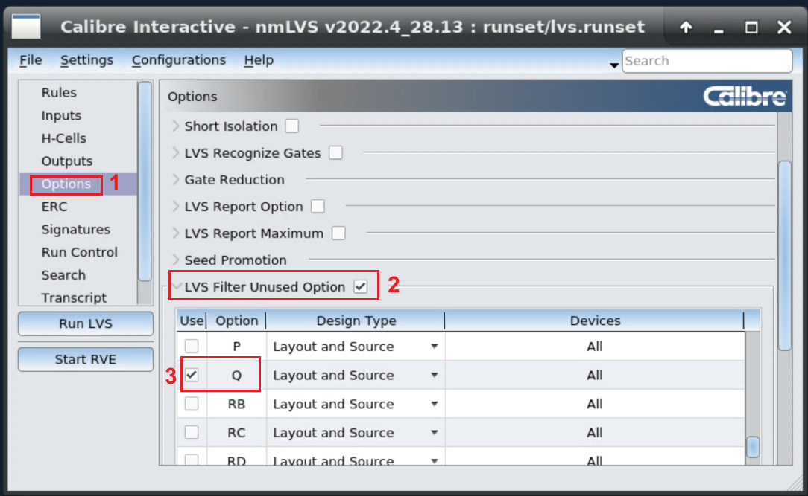
- 在
LVS Box可以选择 (a) 不处理特定的模块或者子电路，进行常规的 LVS 流程；(b) 根据设计的情况选择添加 LVS Box，需要在 GUI 界面中手动添加想添加 Box 的子模块名称，名称需要和 Virtuoso 设计中 Cell 名称保持一致。如下图所示，我们给 CVA6 CPU 中的 2 种 SRAM IP 添加了 LVS Box。
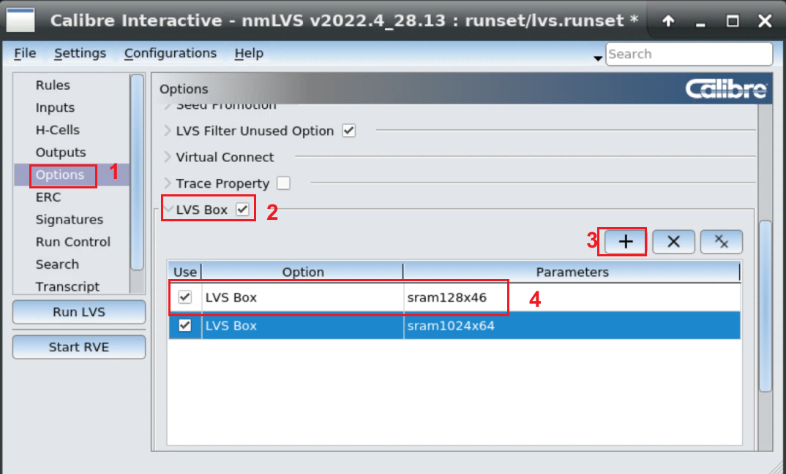
什么是 LVS Box
LVS Box 可以帮助用户在进行版图与原理图对比时，将某些模块视为一个“黑盒子”，即不展开其内部结构进行详细检查，而是只检查其外部连接是否正确。使用 LVS Box 可以简化和加速 LVS 检查过程，特别是在处理复杂设计时，但是同时可以确保这些模块的外部连接是正确的。
5.3 保存 LVS 相关设置
在 Calibre Interactive 上方菜单栏选择 File -> Save Runset As 可以将 以上对于 LVS 物理验证的配置（包括输入读取文件路径、LVS Options 选项等）统一写入到一个 Runset 文件中。
为了保持工作目录规整，建议将 Runset 保存至 pv/runset/lvs.runset 路径。
在之后进行相同设计的版本迭代时，可以直接选择 File -> Load Runset 读取之前保存的 Runset 文件，加速工作流。
5.4 查看 LVS 物理验证结果
在 Calibre Interactive 左侧选择 Run LVS，即可开始 LVS 物理验证。按照此前的设置，LVS 输出文件在 pv/workspace/lvs 路径下。同样地，我们可以在 GUI 界面中查看 LVS 物理验证的结果，例如报错的 Instance 与 Net 名称、在版图中的位置，等等。
一个通过 LVS 物理验证的 GUI 界面如下。
注意
需要保证 Extraction Results, Comparison Results，以及 ERC Results 都没有报错。
5.5 常见的 LVS 报错
Under development!
6. DRC 物理验证
6.1 设置 DRC 运行选项
因为 DRC 物理验证流程与 LVS 类似，都是适用 Calibre Interactive 窗口进行操作，也可以保存/读取 DRC Runset，主要有以下几个步骤：
- 在 Virtuoso Layout Suite L 上方菜单栏中选择
Calibre -> Run nmDRC，配置 DRC 运行选项； - 在 Calibre Interactive 左侧选择
Rules导入 DRC Rules，位于/PDK/TSMC_22NM/PDK/1P9M_6X1Z1U_iPDK_CRN22ULL_shrink_T-N22-CR-SP-004-W1_v1.3_1p1a_20211230/Calibre/drc/calibre_block.drc，并设置 DRC 输出文件路径为pv/workspace/drc； - 在 Calibre Interactive 左侧选择
Inputs，设置Hierarchical（层次化）或者Flat（扁平化）选项。层次化的验证速度更优，而扁平化的物理验证更加完善； - 保存 DRC Runset：在 Calibre Interactive 上方菜单栏选择
File -> Save Runset As，并保存至pv/workspace/runset/drc.runset路径； - 读取 DRC Runset：在 Calibre Interactive 上方菜单栏选择
File -> Load Runset读取之前保存的 Runset 文件。
6.2 数字子系统的 DRC 流程
在 Calibre Interactive 左侧选择 Run DRC。可以在 pv/workspace/drc/ 中查看 DRC 报告，或者在 GUI 界面中查看更多的版图信息，包括报错的 Cell、Net 位置等。
对于数字子系统来说，有些 DRC 报错不需要考虑（即可以 Waive），例如 Seal Ring 和 IO Pad 相关的报错。
一个 DRC 物理验证报告的 GUI 界面如下。
7. 天线效应物理验证
天线效应的物理验证流程除了规则文件，其他与 DRC 完全一致。
天线效应的规则文件位于 /PDK/TSMC_22NM/PDK/1P9M_6X1Z1U_iPDK_CRN22ULL_shrink_T-N22-CR-SP-004-W1_v1.3_1p1a_20211230/Calibre/drc/calibre.ant。